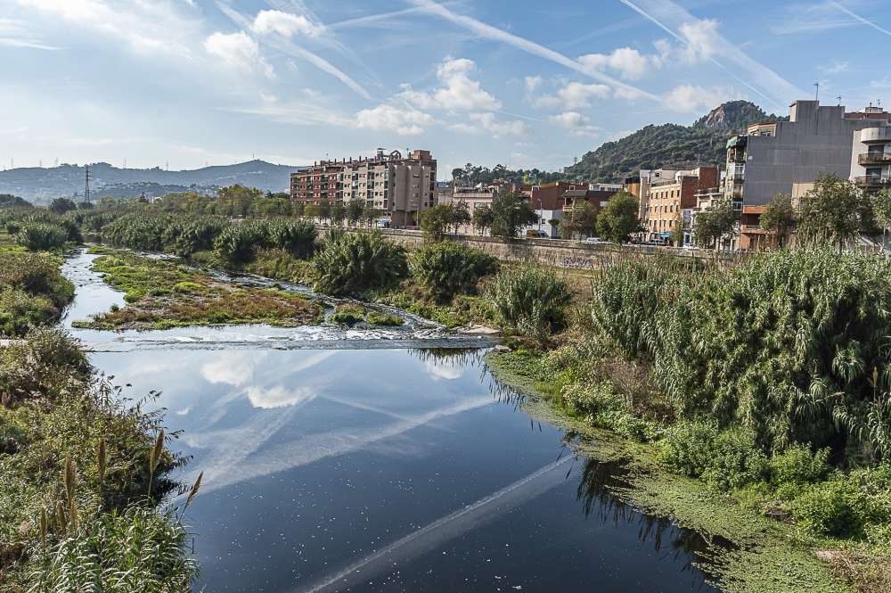
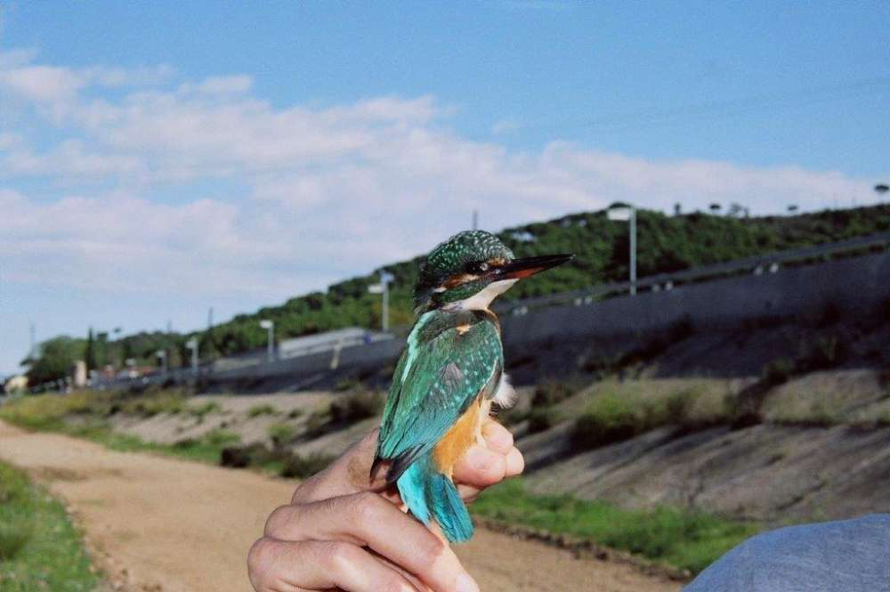
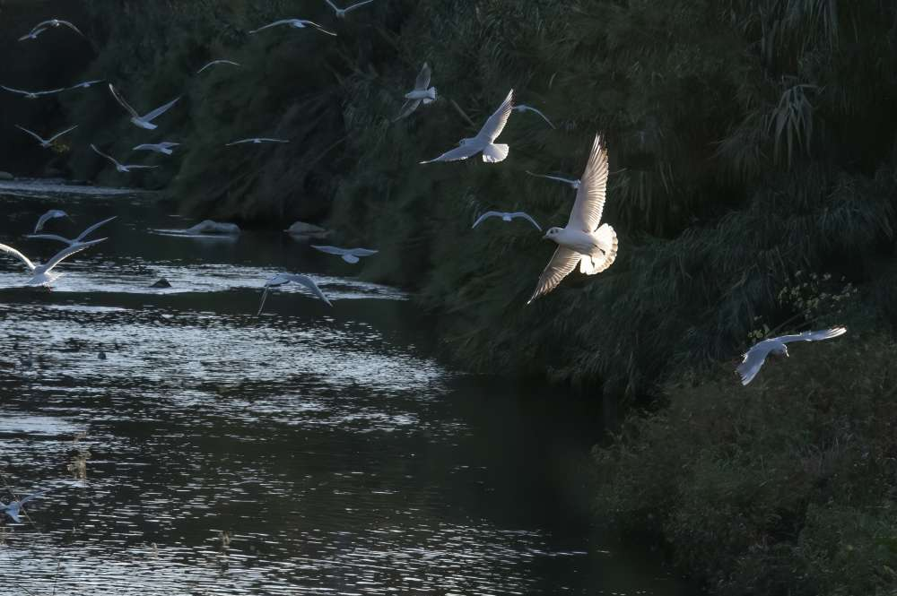
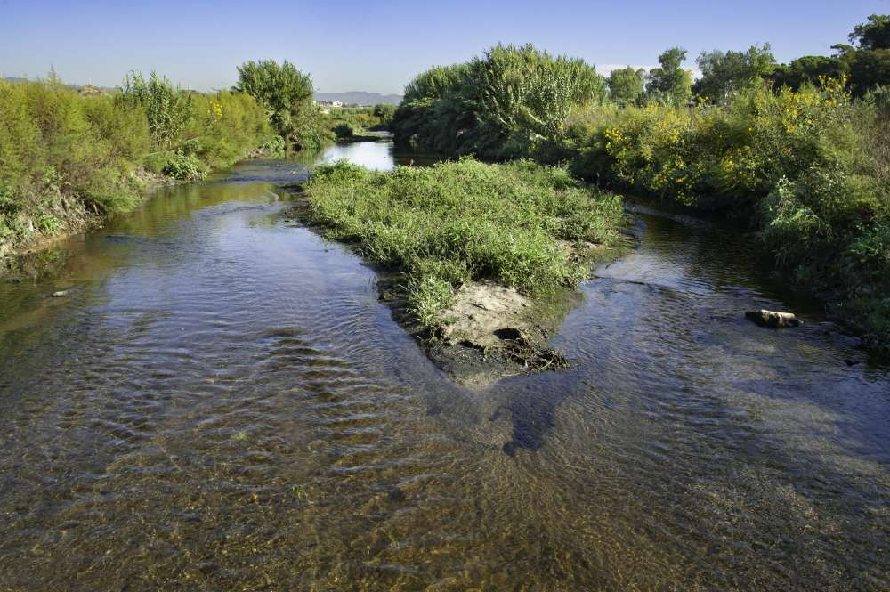
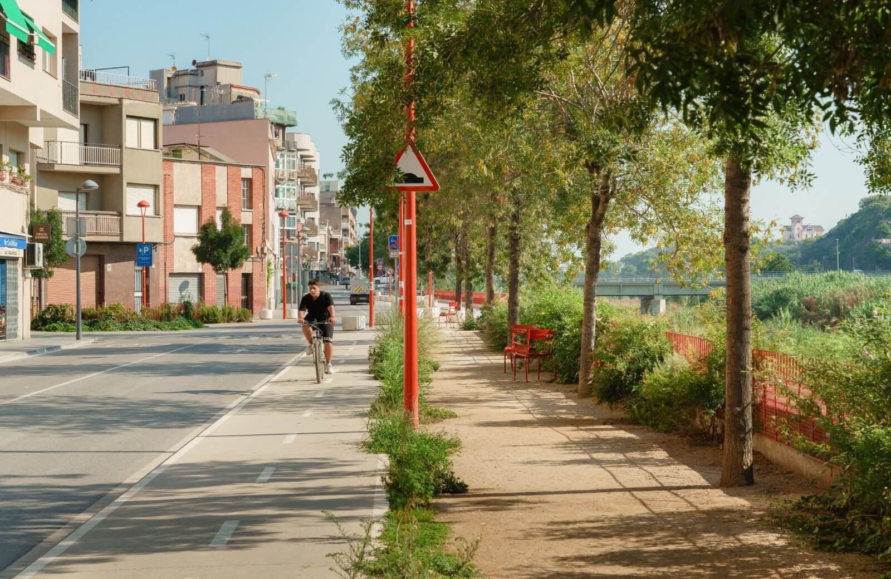
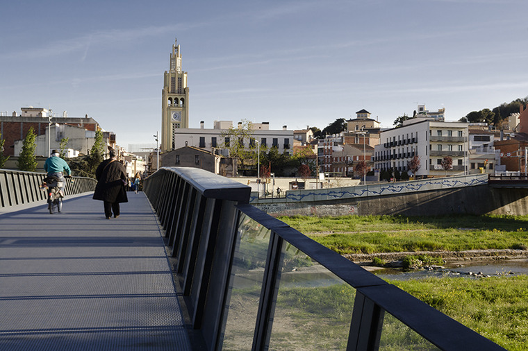

Medi Ambient
Ajuntament Montcada i Reixac
Inici
Contacte
Mesures mediambientals
Consells per empreses i habitants
Informació UE i Agenda 2030
Citacions
L'entorn natural de Montcada i Reixac: el Besòs
Montcada i Reixac té el privilegi de situar-se en un magnífic entorn natural: el riu Besòs. Es tracta d’un espai pensat per a les persones, naturalitzat i lliure de cap acció agressiva. El riu ha aconseguit recuperar gran part de la seva fauna i flora, fet que l’enriqueix encara més.
| Imatges | Descripció |
|---|---|
|  | Paisatge natural del riu Besòs |
|  | Ocell del riu Besòs |
|  | Fauna del riu Besòs |
|  | Vegetació del riu Besòs |
Projectes ambientals
| Imatges | Descripció |
|---|---|
|  | Arranjament de l’avinguda de la Ribera al parc fluvial del Besòs en l’àmbit urbà de Montcada i Reixac |
|  | El projecte fomenta la sostenibilitat recuperant l’entorn del riu, promovent la mobilitat a peu i en bicicleta i millorant la connexió entre barris amb respecte pel medi natural. |